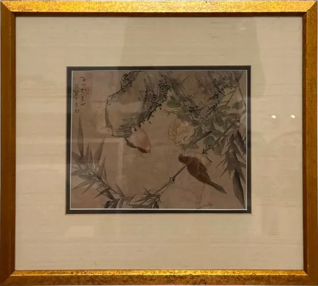
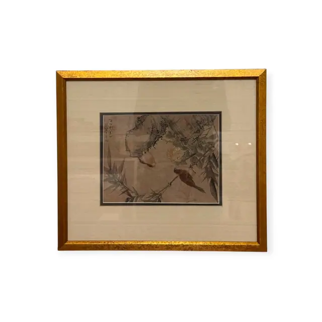
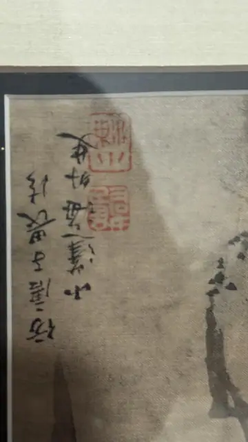
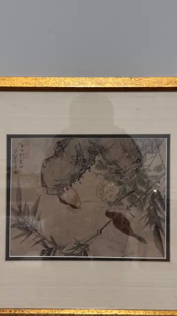
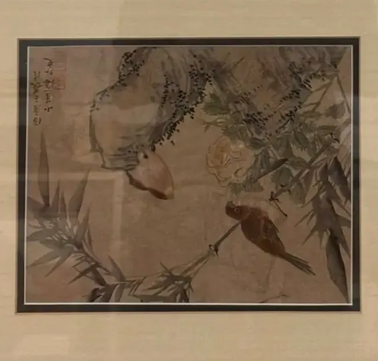
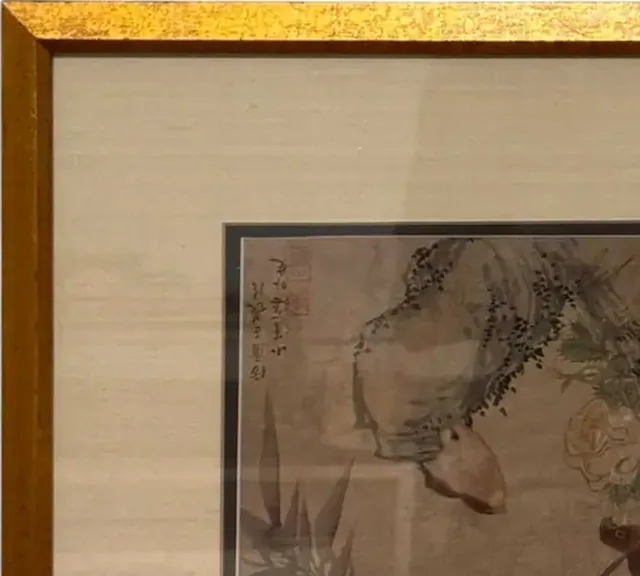
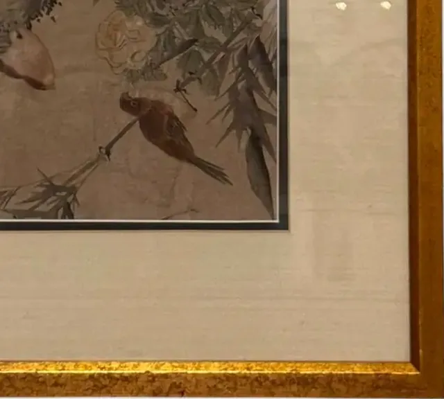
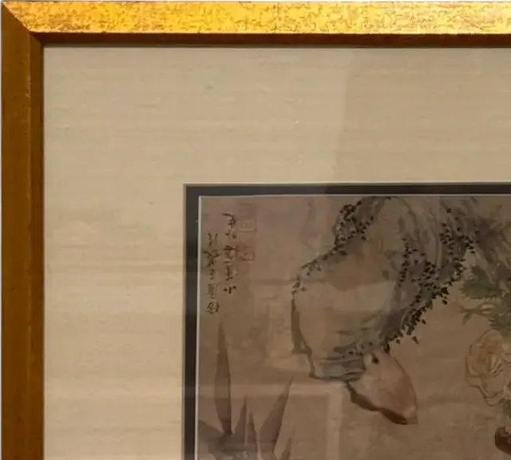

Paintings & Prints
Asian Ink Painting of Bird on Rock, Signed, Framed
· 20th century or earlier
Price Upon Request









About the Item
A softly worked ink painting on a toned silk-like ground: a small brown-breasted bird with a long tail perches on a jutting grey rock at the centre, its head turned to the left. Bamboo leaves and slender stems sweep in from the right and below, and a single pale yellow-white blossom opens above the bird. The ink is applied in dilute washes with darker accents on the leaves and the bird's markings, and the whole scene is faded and atmospheric rather than crisp. Two columns of cursive calligraphy and two vermilion seals are placed at the upper left. It is set behind a black inner line mat and a natural raw-silk surround in a broad gold-leaf frame under glass. Medium: ink and light colour on silk or paper. Signed upper left of the picture, two columns of cursive characters with two red seals beside them. Condition: The ground is browned and mottled with age and the image is faded; no tears or losses visible through the glass. Strong glare in every frame.
Details
- Creation Year:
- 20th century or earlier
- Dimensions:
- Height: 16.0 in (40.64 cm)
Width: 17.75 in (45.09 cm)
outside of frame - Medium:
- ink and light colour on silk or paper
- Period:
- 20Th
- Condition:
- Offered in the condition shown in the photographs.
- Reference Number:
- VO-150
- Documentation:
- no certificate photographed